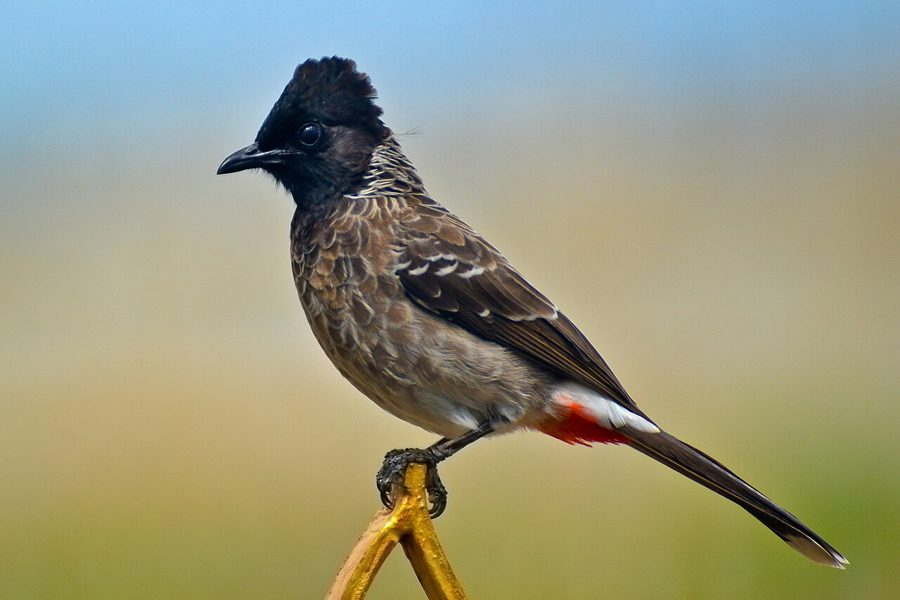

गुलदुम बुलबुलRed-vented Bulbul
Pycnonotus cafer · Pycnonotidae · BRD-0017

- Scientific name
- Pycnonotus cafer (Linnaeus, 1766)
- Family
- Pycnonotidae
- Hindi
- गुलदुम बुलबुल
- Status here
- native
- IUCN
- LC
When to look कब देखें
Present all year.
गुलदुम बुलबुल / Red-vented Bulbul
Pycnonotus cafer (Linnaeus, 1766) — Pycnonotidae
गुलदुम बुलबुल — बगीचों, खेतों और झाड़ियों में फुदकने वाली एक बेहद चंचल और मिलनसार चिड़िया। इसके काले सिर पर एक छोटा सा कलगीनुमा उभार, भूरे-काले शरीर पर तराजू जैसी चित्तियां और पूंछ के नीचे चमकीला लाल रंग (गुलदुम) इसकी मुख्य पहचान हैं। यह इंसानी बस्तियों के आस-पास रहना पसंद करती है और बगीचे के हानिकारक कीड़ों को खाने के साथ-साथ पौधों के बीजों को फैलाने में महत्वपूर्ण भूमिका निभाती है।
Quick Identification त्वरित पहचान
| Feature | Description |
|---|---|
| Size | Medium-sized bulbul (20–22 cm total length); active and alert posture |
| Plumage | Sooty-black head, throat and breast; brown back with scale-like greyish margins |
| Vent | Bright scarlet-red patch under the base of the tail; diagnostic at a glance |
| Rump | White, highly conspicuous when the bird flies or hops |
| Tail | Long, blackish tail, tipped with white feathers |
| Head crest | Small, partially erectile tuft or crest on the crown |
Field tip: Look for a dark, crested bird with a scale-patterned chest that shows a bright red patch under its tail and a white rump in flight. Often seen perched on wires, garden fences, or foraging actively in low bushes.
Morphology आकारिकी
Biometrics (typical measurements in the northern Indian plains):
| Measurement | Range |
|---|---|
| Total length | 200–220 mm |
| Wing (flattened chord) | 90–103 mm |
| Tail | 79–97 mm |
| Tarsus | 20–23 mm |
| Bill (culmen from base) | 19–21 mm |
| Weight | 28–45 g |
Plumage: Head, chin, and throat are deep glossy black, extending to a dark brown breast. The feathers of the breast and back have pale grey edges, giving the bird a highly distinct scaled or scalloped appearance. The lower belly and flanks are dull greyish-white.
Vent and Rump: The undertail coverts are a brilliant scarlet red, which is the key field mark for this species. The rump is clean white, contrasting strongly with the dark upperparts when the bird takes flight.
Bare parts: Bill, legs, and feet are blackish or dark grey. The iris is deep brown.
Sexes: Identical in plumage, though males are slightly larger and heavier on average.
Juveniles: Duller than adults; the black hood is browner, and the red vent patch is lighter, orange-pink rather than scarlet.
Vocalisations
The Red-vented Bulbul is highly vocal and possesses a cheerful, bubbly, and noisy range of calls.
- Contact call: A series of loud, sweet, and rapid whistles, often rendered as peep-peep-peep or chook-chook-chook, used to communicate with its partner.
- Territorial song: A musical, short, rolling phrase delivered from high perches to establish nesting territory.
- Alarm call: A sharp, rapid, scolding chatter (chur-chur-chur) repeated rapidly when predators like Shikras or domestic cats are nearby.
Ecological Role पारिस्थितिक भूमिका
Seed disperser. The Red-vented Bulbul is an important frugivore. It feeds on various wild fruits and berries, dispersing intact seeds across agricultural landscapes, village groves, and woodlands. It helps regenerate native trees like Peepal and Banyan.
Insectivore. Particularly during the breeding season, it hunts flying and crawling insects to feed its young. It consumes grasshoppers, beetles, ants, and termites, acting as a natural pest control agent.
Pollinator. While foraging for nectar on large flowers like Semal (Bombax ceiba), it carries pollen on its forehead and bill, assisting in the pollination of forest trees.
Life Cycle / Phenology जीवन चक्र
- Breeding season: March to September; peaks during the monsoon season (June–August) when insect food is abundant.
- Nest: A neat, shallow cup built from small twigs, dry grass, rootlets, and spiderwebs. It is usually placed 1 to 3 metres above the ground in dense bushes, garden hedges, or low branches of trees.
- Eggs: 2 to 3 eggs, pinkish-white with deep reddish-brown spots and blotches.
- Incubation: About 14 days, primarily by the female.
- Fledging: Young birds leave the nest in 12–15 days but remain dependent on parents for another 2 weeks.
Host Plants or Prey आहार
Primary food items:
- Berries and fruits of Neem (Azadirachta indica), Banyan (Ficus benghalensis), and Peepal (Ficus religiosa).
- Berries of the invasive Lantana (Lantana camara).
- Insects including winged termites, grasshoppers, flies, caterpillars, and beetles.
- Nectar from flowers of Semal and Palash (Butea monosperma).
Predators / Natural Enemies शत्रु
- Shikra (Accipiter badius) — primary aerial predator of adults.
- House Crow (Corvus splendens) — raids nests to steal eggs and nestlings.
- Indian Rat Snake (Ptyas mucosa) — climbs bushes to raid nests.
- Feral Cats — hunt birds foraging on the ground.
Agricultural / Human Relevance कृषि प्रासंगिकता
Pest control. By feeding on caterpillars, beetles, and locusts, bulbuls reduce pest damage in home gardens and crop fields.
Orchard visitor. They occasionally feed on soft cultivated fruits like ripe guavas, papayas, and mangoes, leading to minor conflicts with orchard owners.
Cultural significance. Locally known as Guldum (लाल-पूंछ वाला), they are admired for their lively nature. In historical times, they were kept as pets and trained for exhibition fighting, a practice now illegal under the Wildlife Protection Act, 1972.
Expected Locally स्थानीय रूप से अपेक्षित
Not a field record. Written from published accounts for eastern Uttar Pradesh. No confirmed local sighting yet — if you have seen it, that is what the atlas needs.
अभी तक स्थानीय पुष्टि नहीं। यह विवरण प्रकाशित स्रोतों से है, किसी अवलोकन से नहीं।
Commonly seen in pairs or small family groups across Basti district. They are highly habituated to human activity and are regular visitors to village house gardens and schoolyards. They can be observed foraging in low shrubs and calling loudly from telegraph wires or high branches of Neem trees.
Distribution वितरण
Global range: Native across South Asia, from eastern Pakistan through India, Nepal, Bhutan, Bangladesh, Sri Lanka, to Myanmar; introduced and established in Hawaii, Fiji, Australia, New Zealand, and parts of the Middle East.
In India: Found throughout the plains and hills up to 2,000 metres in the Himalayas, avoiding only extremely arid desert tracts.
In Uttar Pradesh: Abundant year-round resident in all districts, from urban residential zones to rural croplands.
In Basti district / eastern UP: Ubiquitous resident, observed in every village, town, agricultural field, and woodland margin.
Range notes: No significant range changes documented.
Research Questions शोध प्रश्न
Anyone can investigate these | कोई भी इन प्रश्नों की जाँच कर सकता है
- Which garden bushes do bulbuls prefer for nesting in your village? / आपके गाँव में बुलबुल घोंसला बनाने के लिए किस प्रकार की झाड़ियों को पसंद करती है? — Monitor nesting sites; record bush species and nest height from the ground.
- What percentage of their diet comes from Lantana berries compared to native Ficus fruits? / देशी पीपल-बरगद की तुलना में बुलबुल के भोजन का कितना हिस्सा आक्रामक लेंटाना झाड़ी से आता है? — Keep a foraging log in summer and monsoon.
- Do bulbuls raise more than one brood in a single breeding season in eastern UP? / क्या पूर्वी यूपी में बुलबुल एक ही प्रजनन काल में एक से अधिक बार अंडे देती है? — Track a pair from March to September.
- How do they respond to the presence of a Shikra or feral cat in the garden? — Study alarm call frequency and mobbing behavior.
- How do their feeding habits change when winged termites emerge after the first monsoon rains? — Document their insect-catching frequency during emergence events.
Similar Species मिलती-जुलती प्रजातियाँ
| Species | How to tell apart | हिंदी |
|---|---|---|
| Red-whiskered Bulbul (Pycnonotus jocosus) | Prominent tall black crest; red patch behind the eye; white cheeks and underparts | सिपाही बुलबुल — ऊंची कलगी और सफेद गाल |
| White-eared Bulbul (Pycnonotus leucotis) | Large white patch on the side of the head; bright yellow vent patch instead of red | सफेद-कान बुलबुल — पीली पूंछ |
| Himalayan Bulbul (Pycnonotus leucogenys) | White cheeks; forward-curving crest; yellow vent patch | पहाड़ी बुलबुल — पीली पूंछ |
Field rule: Black head with scaled breast, white rump, and a bright red vent patch is diagnostic for the Red-vented Bulbul. No other common bulbul in eastern UP has a red vent combined with a scaled black-and-brown breast.
Taxonomy & Classification वर्गीकरण
Original description. Carl Linnaeus described the Red-vented Bulbul as Lanius cafer in 1766 in his work Systema Naturae, 12th edition (Vol. 1, p. 134). The type locality was erroneously recorded as "Caput Bonae Spei" (Cape of Good Hope, South Africa), which was corrected to Ceylon (Sri Lanka) by Whistler and Kinnear in 1932. The genus name Pycnonotus is derived from the Greek pyknos (thick) and noton (backed).
Subspecies. Nine subspecies are recognized globally, with the following occurring in India:
| Subspecies | Authority | Range | Notes |
|---|---|---|---|
| P. c. intermedius | Jerdon, 1862 | Kashmir and Himalayas to Gangetic plains | UP subspecies; blacker throat and breast |
| P. c. humayuni | Deignan, 1946 | Northwestern India (dry zones) | Paler, sandy-brown coloration |
| P. c. cafer | (Linnaeus, 1766) | Southern Indian peninsula | Nominate form; smaller, darker |
| P. c. wetmorei | Deignan, 1943 | Eastern India and Bengal plains | Darker upperparts and dense chest scales |
Family and order placement. Placed in the order Passeriformes, family Pycnonotidae (bulbuls). The family Pycnonotidae contains about 150 species of medium-sized, vocal passerines. Pycnonotus is the largest genus within the family.
Phylogenetic notes. Genetic studies (such as Moyle & Marks, 2006) show that the genus Pycnonotus is monophyletic, though its internal taxonomy remains complex due to hybridization where subspecies overlap.
IUCN status rationale. Listed as Least Concern (LC). The species has an extremely large global range, high population density, and is highly adaptable to human-altered landscapes, with populations increasing globally.
Photo Gallery फोटो गैलरी
References संदर्भ
- Linnaeus, C. (1766). Systema Naturae per regna tria naturae. Editio Duodecima, Reformata. Laurentii Salvii, Holmiae, p. 134.
- Ali, S. & Ripley, S.D. (1996). Handbook of the Birds of India and Pakistan. Vol. 6. Oxford University Press, New Delhi.
- Grimmett, R., Inskipp, C. & Inskipp, T. (2011). Birds of the Indian Subcontinent. 2nd ed. Christopher Helm, London.
- Deignan, H.G. (1946). The races of the Red-vented Bulbul [Pycnonotus cafer (Linnaeus)]. Journal of the Washington Academy of Sciences, 36(7), 243-247.
- BirdLife International (2024). Pycnonotus cafer. IUCN Red List of Threatened Species. Ver. 2024.
- GBIF Occurrence Data — Pycnonotus cafer, Uttar Pradesh (2010–2025).
Source file: species/fauna/birds/red_vented_bulbul.md